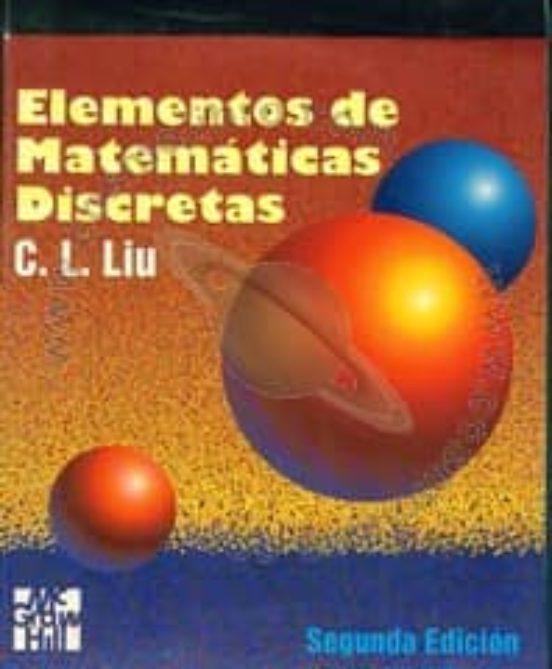
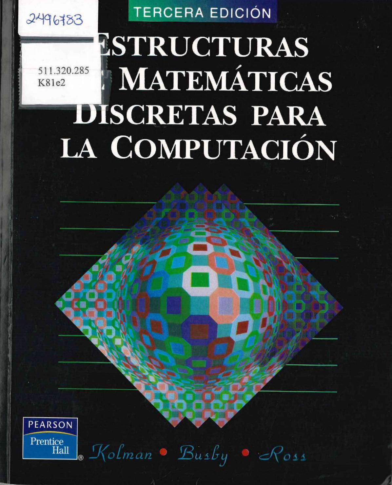
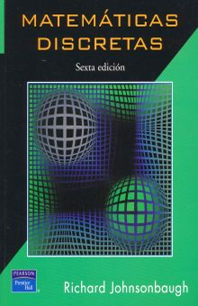
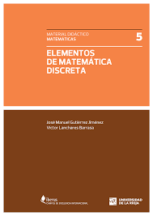
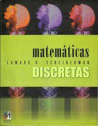
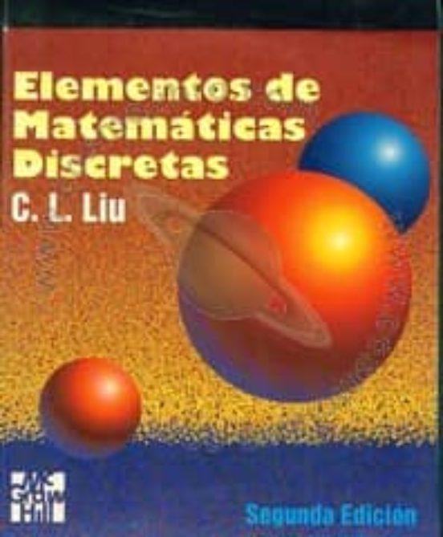
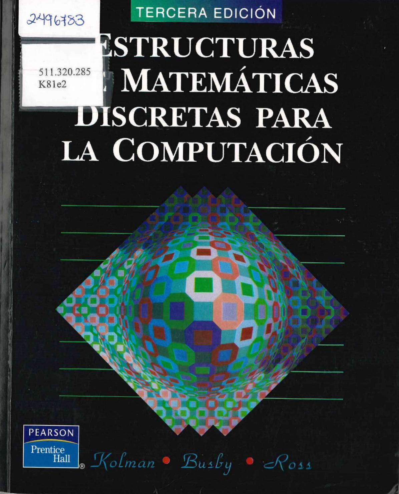
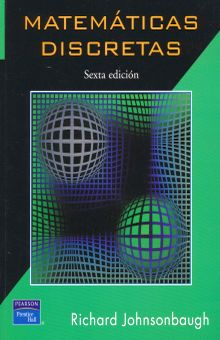
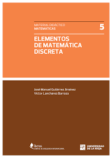
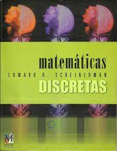

7. Bibliografía
1. Dijkstra, E. W. (s.f.). EWD manuscripts. Department of Computer Science, University of Texas at Austin.
2. Hernández, A. [AydroPunk]. (s.f.). Algoritmo_Dijkstra [Repositorio de código fuente]. GitHub.
3. W3Schools. (2023). DSA Graphs Dijkstra's Algorithm.
4. Paul Tremblay, J., & Karl Grassmann, W. (1996). MATEMÁTICA DISCRETA Y LOGICA: UNA PERSPECTIVA DESDE LA
CIENCIA DE LA COMPUTACIÓN (1.a ed.). PRENTICE-HALL.

5. Tremblay, J., & Manohar, R. (2000). MATEMÁTICAS DISCRETAS CON APLICACIÓN A LAS CIENCIAS DE LA COMPUTACIÓN
(2.a ed.). Compañía Editorial Continental.

6. Liu, C. L. (2011). Elementos de Matemáticas Discretas (2.a ed.). Mcgraw-hill / Interamericana de México

7. Kolman, B., Busby, R. C., & Ross, S. (1997). Estructuras de matemáticas discretas para la computación. Pearson Educación.

8. Johnsonbaugh, R. (1997). Matemáticas discretas. Pearson Educación.

9. Gutiérrez, J., & Lanchares, V. (2010). Elementos de matemática discreta (1.a ed.). Universidad de La Rioja.

10. Scheinerman, E. R. (2001). Matemáticas discretas. Cengage Learning Editores.

2. Hernández, A. [AydroPunk]. (s.f.). Algoritmo_Dijkstra [Repositorio de código fuente]. GitHub.
3. W3Schools. (2023). DSA Graphs Dijkstra's Algorithm.
4. Paul Tremblay, J., & Karl Grassmann, W. (1996). MATEMÁTICA DISCRETA Y LOGICA: UNA PERSPECTIVA DESDE LA CIENCIA DE LA COMPUTACIÓN (1.a ed.). PRENTICE-HALL.
5. Tremblay, J., & Manohar, R. (2000). MATEMÁTICAS DISCRETAS CON APLICACIÓN A LAS CIENCIAS DE LA COMPUTACIÓN (2.a ed.). Compañía Editorial Continental.
6. Liu, C. L. (2011). Elementos de Matemáticas Discretas (2.a ed.). Mcgraw-hill / Interamericana de México

7. Kolman, B., Busby, R. C., & Ross, S. (1997). Estructuras de matemáticas discretas para la computación. Pearson Educación.

8. Johnsonbaugh, R. (1997). Matemáticas discretas. Pearson Educación.

9. Gutiérrez, J., & Lanchares, V. (2010). Elementos de matemática discreta (1.a ed.). Universidad de La Rioja.

10. Scheinerman, E. R. (2001). Matemáticas discretas. Cengage Learning Editores.
